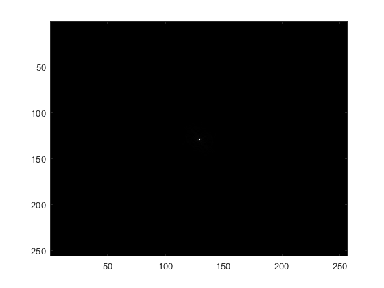

Contents
close all;
clc;
html = true;
1.
if(html == true)
close all;
end
T1 = niftiread("sub-CSI1_ses-16_run-01_T1w_defaced.nii");
T2 = niftiread("sub-CSI1_ses-16_T2w.nii.gz");
selected_slice = 125;
T1
if(html == true)
close all;
end
figure;
imagesc((T1(:, :, selected_slice))); colormap gray;
title("axial slice " + num2str(selected_slice) + " ,T1-weighted")
figure;
imagesc((permute(T1(80,:,:),[2 3 1]))); colormap gray;
title("sagittal slice " + num2str(80) + " ,T1-weighted")
figure;
imagesc((permute(T1(:,selected_slice,:,:),[1 3 2]))); colormap gray;
title("coronal slice " + num2str(selected_slice) + " ,T1-weighted")
T2
if(html == true)
close all;
end
figure;
imagesc(T2(:, :, selected_slice)); colormap gray;
title("axial slice " + num2str(selected_slice) + " ,T2-weighted")
figure;
imagesc(permute(T2(80,:,:),[2 3 1])); colormap gray;
title("sagittal slice " + num2str(80) + " ,T2-weighted")
figure;
imagesc(permute(T2(:,selected_slice,:,:),[1 3 2])); colormap gray;
title("coronal slice " + num2str(selected_slice) + " ,T2-weighted")
2.
if(html == true)
close all;
end
g = [1 2 10 3];
disp(prctile(g,50))
compressed = threshold_compression(g,50);
ground_truth = [1 1 1];
prediction = [0 0 0];
mse = mean_squared_error(ground_truth, prediction);
wname = 'haar';
reference_img = permute(T1(80,:,:),[2 3 1]);
wavelet_plot_level_2(reference_img,wname,false);
2.5000
3.
if(html == true)
close all;
end
figure;
fft2_reference_img = fft2(reference_img);
imagesc(abs(fftshift(fft2_reference_img))); colormap gray;
one_d_fft2 = reshape((fft2_reference_img).',1,[]);
one_d_fft2_mag = abs(fftshift(one_d_fft2));
figure;
histogram(one_d_fft2_mag)
title('histogram of magnitude response of image')

s = 75
if(html == true)
close all;
end
compressed_s_75 = threshold_compression(one_d_fft2_mag,75);
reconstructed_img_75 = ifft(compressed_s_75);
flat_refernce_img = reshape(reference_img, [1 256*256]);
mse_75 = mean_squared_error(flat_refernce_img, int16(abs(reconstructed_img_75)));
subplot(1,2,1)
imagesc(reference_img); colormap gray;
title('original image')
subplot(1,2,2);
imagesc(int16(abs(reshape(reconstructed_img_75, [1, 256*256])))); colormap gray;
title("reconstructed image w/ mse : " + num2str(mse_75))
s = 50
if(html == true)
close all;
end
compressed_s_50 = threshold_compression(one_d_fft2_mag,50);
reconstructed_img_50 = ifft(compressed_s_50);
mse_50 = mean_squared_error(flat_refernce_img , int16(abs(reconstructed_img_50)));
figure;
subplot(1,2,1)
imagesc(reference_img); colormap gray;
title('original image')
subplot(1,2,2);
imagesc(int16(abs(reshape(reconstructed_img_50, [1, 256*256])))); colormap gray;
title("reconstructed image w/ mse = " + num2str(mse_50))
4.
(a) reference img
if(html == true)
close all;
end
figure;
haar
z = wavelet_plot_level_2(reference_img, 'haar', false);
figure;
daubechies?
z1 = wavelet_plot_level_2(reference_img, 'db4', false);
figure;
coiflet
z2 = wavelet_plot_level_2(reference_img, 'db3', false);
(b) standard basis
if(html == true)
close all;
end
standard = zeros(256,256);
standard(1,1) = 1;
figure;
haar
if(html == true)
close all;
end
[z,haar_h1, haar_v1, haar_d1, haar_h2, haar_v2, haar_d2, haar_h3, haar_v3, haar_d3] = wavelet_plot_level_2(standard, 'haar', 2);
figure;
daubechies?
if(html == true)
close all;
end
[z1,db4_h1, db4_v1, db4_d1, db4_h2, db4_v2, db4_d2, db4_h3, db4_v3, db4_d3] = wavelet_plot_level_2(standard, 'db4', 50);
figure;
coiflet
if(html == true)
close all;
end
[z2,db3_h1, db3_v1, db3_d1, db3_h2, db3_v2, db3_d2, db3_h3, db3_v3, db3_d3] = wavelet_plot_level_2(standard, 'db3', 50);
(c) FFT for Wavelet Shape
if(html == true)
close all;
end
haar
if(html == true)
close all;
end
find_shape(z,'haar', 500)
db4
if(html == true)
close all;
end
find_shape(z1, 'db4', 50)
coiflet
if(html == true)
close all;
end
find_shape(z2, 'db3', 50)
(d) histograms across decompositions
if(html == true)
close all;
end
haar
if(html == true)
close all;
end
plot_nine_hist(haar_h1, haar_v1, haar_d1, haar_h2, haar_v2, haar_d2, haar_h3, haar_v3, haar_d3, 'haar');
db4
if(html == true)
close all;
end
plot_nine_hist(db4_h1, db4_v1, db4_d1, db4_h2, db4_v2, db4_d2, db4_h3, db4_v3, db4_d3, 'db4');
coiflet
if(html == true)
close all;
end
plot_nine_hist(db3_h1, db3_v1, db3_d1, db3_h2, db3_v2, db3_d2, db3_h3, db3_v3, db3_d3, 'db3');
Functions
Threshold Compression
if(html == true)
close all;
end
function compressed = threshold_compression(x,percentile_threshold)
x_mag = abs(x);
thresholded_set_indices = find(x_mag > prctile(x,percentile_threshold));
compressed = zeros(size(x));
for i = 1:length(x)
if ismember(i,thresholded_set_indices)
compressed(i) = x(i);
end
end
end
Wavelet Level 2
function [approximation, H1_3, V1_3, D1_3, H2_3,V2_3,D2_3, H3_3, V3_3, D3_3] = wavelet_plot_level_2(x,wname, level)
[C,S] = wavedec2(x,2,wname);
approximation = appcoef2(C,S,wname,2);
[H1,V1,D1] = detcoef2('all',C,S,1);
[H2,V2,D2] = detcoef2('all',C,S,2);
[C,S] = wavedec2(x,3,wname);
[H1_3,V1_3,D1_3] = detcoef2('all',C,S,1);
[H2_3,V2_3,D2_3] = detcoef2('all',C,S,2);
[H3_3,V3_3,D3_3] = detcoef2('all',C,S,3);
if(level)
[C,S] = wavedec2(x,level,wname);
approximation = appcoef2(C,S,wname,level);
end
[C,S] = wavedec2(x,2,wname);
approximation_2 = appcoef2(C,S,wname,2);
subplot(4,4,1);
imagesc(approximation_2); colormap gray;
subplot(4,4,2);
imshow(H2)
subplot(4,4,5);
imshow(V2)
subplot(4,4,6);
imshow(D2)
subplot(4,4,[9 10 13 14]);
imshow(V1)
subplot(4,4,[11 12 15 16]);
imshow(D1)
subplot(4,4,[3 4 7 8]);
imshow(H1);
sgtitle("Two-Level Wavelet Transform for " + wname + " wavelet")
end
MSE
function mse = mean_squared_error(ground_truth, prediction)
mse = mean((prediction-ground_truth).^2);
end
Wavelet Histogram for Wavelet Decompositions
function plot_nine_hist(h1, v1, d1, h2, v2, d2, h3, v3, d3, wavelet_name)
figure;
bins = [-0.0010, 0.0010, 1000000];
x_pos = [1 100000];
subplot(3,3,1);
wavelet_hist(h1,bins, x_pos, "H1");
subplot(3,3,2);
wavelet_hist(v1,bins, [0 0.1], "V1");
subplot(3,3,3)
wavelet_hist(d1,bins, x_pos, "D1");
subplot(3,3,4);
wavelet_hist(h2,bins, x_pos, "H2");
subplot(3,3,5);
wavelet_hist(v2,bins, x_pos, "V2");
subplot(3,3,6)
wavelet_hist(d2,bins, x_pos, "D2");
subplot(3,3,7);
wavelet_hist(h3,bins, x_pos, "H3");
subplot(3,3,8);
wavelet_hist(v3,bins, x_pos, "V3");
subplot(3,3,9);
wavelet_hist(d3,bins, x_pos, "D3");
sgtitle(wavelet_name)
end
function wavelet_hist(data, bins, x_pos, title_name)
histogram(data, bins);
show_hist_counts(data,bins, x_pos)
title(title_name);
end
function show_hist_counts(data,bins, x_pos)
N = histcounts(data,bins);
text(x_pos(1), N(1) + 100, num2str(N(1)));
text(x_pos(2), 500, num2str(N(2)));
end
Wavelet Shape
function find_shape(approximation, wavename, xlimit)
figure;
x = abs(fft(approximation));
z = reshape(x, [1 size(approximation,1)*size(approximation,2)]);
plot(z)
title("Wavelet Shape for " + wavename)
xlim([0 xlimit])
end
Min-Max Normalization
function normalized = min_max_normalization(reference_img)
normalized = (reference_img - min(reference_img)) ./ (max(reference_img) - min(reference_img));
end